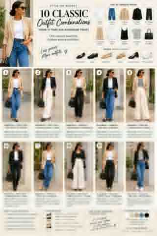

10 Classic Outfit Combinations From 10 Timeless Wardrobe Pieces
You can have a closet full of clothes and still feel like you have nothing to wear. Sometimes, the problem isn't that you need more clothes. You need pieces that work together—and a few styling tricks that make the combinations feel intentional.
This guide uses 10 classic wardrobe pieces and versatile shoes to build outfits that feel polished, not thrown together. You don't need to own every item shown. Use the formulas as inspiration and adapt them to your closet, budget, climate, and dress code.

The 10 timeless pieces
- White T-shirt
- Blue jeans
- Beige blazer
- Black blazer
- Tailored trousers
- Wide-leg trousers
- White button-down shirt
- Silk or satin camisole
- Striped top
- Structured black handbag
For shoes, choose from pointed flats, loafers, ballet flats, minimal sandals, low block heels, or clean white sneakers. You don't need all six. Pick the styles that suit your everyday life.
1. Beige blazer + white T-shirt + blue jeans + pointed flats
This is an easy way to make jeans look considered rather than ordinary. The T-shirt gives you a clean base, the denim keeps the outfit relaxed, and the beige blazer adds structure. Pointed flats finish the look with a polished line, while the black handbag adds a neat contrast.
Style it: Tuck in the T-shirt, add a belt, and keep jewelry simple. Wear it for lunch, travel, casual Fridays, or a relaxed workplace that allows jeans.
2. Black blazer + white T-shirt + wide-leg trousers + loafers
Pair a simple white T-shirt with fluid wide-leg trousers and a black blazer. The result feels modern and sleek without needing a blouse or complicated accessories. Loafers give the outfit a confident, tailored finish.
Style it: Try a half-tuck or a full tuck to define the waist. If the trousers are long, choose shoes with enough sole or heel height to keep the hem from dragging.
3. Beige blazer + white shirt + tailored trousers + low block heels
A crisp white shirt and tailored trousers make a reliable base for workwear. The beige blazer softens the outfit, and low block heels add a little height while keeping the look practical.
Style it: Leave the shirt neatly tucked, show a little cuff beneath the blazer, and choose understated earrings or a watch. This combination suits meetings, presentations, and office days.
4. Black blazer + white shirt + blue jeans + ballet flats
Combine blue jeans with a white shirt, then add a black blazer to bring the outfit together. Ballet flats keep it feminine and easy, so the look feels polished rather than overly formal.
Style it: Choose straight-leg or slim-straight jeans so the outfit keeps a defined shape. For a smarter finish, tuck in the shirt and add a simple belt.
5. Beige blazer + striped top + wide-leg trousers + sandals
A striped top adds personality to neutral trousers and a beige blazer. Minimal sandals make the outfit feel lighter and more relaxed, especially in warm weather.
Style it: Let the stripes be the main pattern. A simple handbag and small jewelry are enough. Choose sandals with a secure fit if you'll be walking a lot.
6. Black blazer + white T-shirt + tailored trousers + loafers
This is a useful formula for days when you want to look professional but don't want to wear a full suit. The T-shirt makes the tailored trousers feel more relaxed, while the blazer and loafers give the outfit structure.
Style it: Make sure the T-shirt is in good condition and fits well at the shoulders. A clean neckline and a neat tuck make a noticeable difference.
7. Beige blazer + white shirt + blue jeans + pointed flats
Switch the tailored trousers from Outfit 3 for blue jeans and the outfit becomes more relaxed. The white shirt keeps it crisp, the beige blazer connects the formal and casual pieces, and pointed flats bring back a polished touch.
Style it: Wear the shirt tucked in for a sharper look, or leave it slightly relaxed for weekends. If pointed flats aren't your style, loafers can work too.
8. Black blazer + silk camisole + wide-leg trousers + low heels
For a dressier option, layer a silk or satin camisole under a black blazer and pair it with wide-leg trousers. Low heels add a refined finish without making the outfit difficult to wear.
Style it: Choose a camisole with a neckline you feel comfortable wearing. For a workplace, keep the blazer on or layer the camisole over a more coverage-friendly base.
9. Beige blazer + white T-shirt + tailored trousers + ballet flats
A white T-shirt can look just as good with tailored trousers as it does with jeans. Add a beige blazer and ballet flats for a simple, comfortable outfit that still looks considered.
Style it: Try black trousers for contrast or cream trousers for a softer, tonal look. Make sure the blazer shoulders fit well; good fit often matters more than adding another accessory.
10. Black blazer + striped top + blue jeans + white sneakers
Finish with a relaxed combination: a striped top, blue jeans, a black blazer, and clean white sneakers. The blazer adds shape, while the stripes keep the outfit lively.
Style it: Keep the sneakers clean and the jeans hem tidy. Swap the sneakers for loafers or pointed flats if you want a more polished version.
The black handbag: the piece that connects the outfits
A structured black handbag can work with denim, tailoring, stripes, and neutral layers. Repeating it across outfits creates a visual thread, so the combinations feel connected without needing a different bag for every look.
Choose a size that fits what you actually carry, and a shape that suits your routine. A versatile bag should support your life, not force you to plan outfits around it.
How shoes change the mood
- Pointed flats: polished and refined.
- Loafers: classic and structured.
- Ballet flats: soft and feminine.
- Sandals: relaxed and suited to warm weather.
- Low block heels: elevated without requiring a high heel.
- White sneakers: fresh and casual.
The same jeans and blazer can look more formal with pointed flats and more relaxed with sneakers. Shoes aren't an afterthought; they're part of the outfit formula.
Four styling principles behind these combinations
1. Keep the colors working together
White, black, beige, and denim make a flexible foundation. You can add your favorite color later, but a coordinated base makes it easier to mix pieces without overthinking.
2. Balance relaxed and structured pieces
Try a T-shirt with tailored trousers, a blazer with jeans, or a soft camisole under a structured jacket. The contrast keeps outfits interesting.
3. Think about the whole silhouette
Wide-leg trousers often work well with a relatively simple or more fitted top. A relaxed jean can benefit from a structured blazer. Look at the shape of the complete outfit, not just whether each item looks good on its own.
4. Repeat accessories on purpose
Repeating a handbag, belt, or pair of shoes is not a styling failure. It helps your wardrobe feel cohesive and means you can get dressed with fewer decisions.
Build these looks with what you already own
Before shopping, pull out a pair of jeans, two kinds of trousers, a basic tee, a shirt, a blazer, a patterned top, a dressier top, your everyday handbag, and two or three pairs of shoes. Try combinations before deciding what is missing.
Ask yourself: Can this top work with three bottoms? Can this blazer work with jeans and trousers? Can these shoes finish at least three outfits? If yes, that piece is earning its place in your wardrobe.
When you do need to shop, buy for a gap—not just because an item looks good by itself. A piece that connects several things you already own will usually be more useful than one that only works with a single outfit.
Final thought
A stylish wardrobe isn't about owning a huge number of clothes. It's about understanding how your clothes work together. A white T-shirt can look casual with sneakers or polished with tailored trousers and a blazer. Jeans can feel relaxed with sandals or elevated with pointed flats. A striped top can work for both a chic weekend outfit and a casual office look.
Start with your own closet, experiment with the combinations, and buy only what fills a real gap. Ten timeless pieces can create a lot of possibilities when the fit, proportions, colors, shoes, and accessories work together.